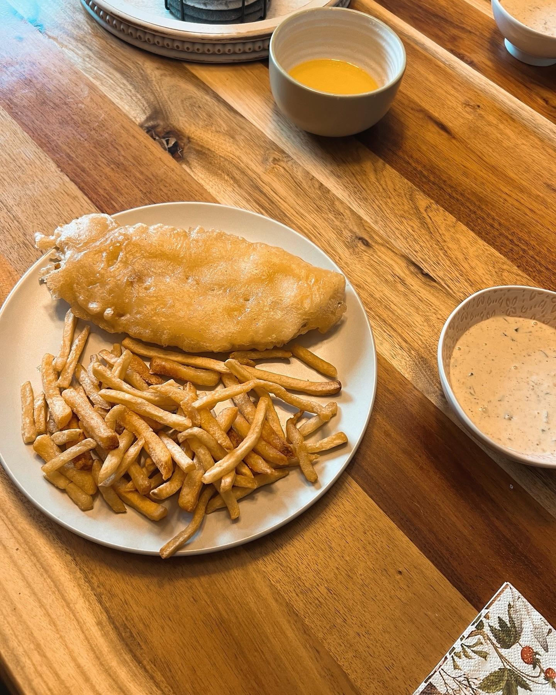
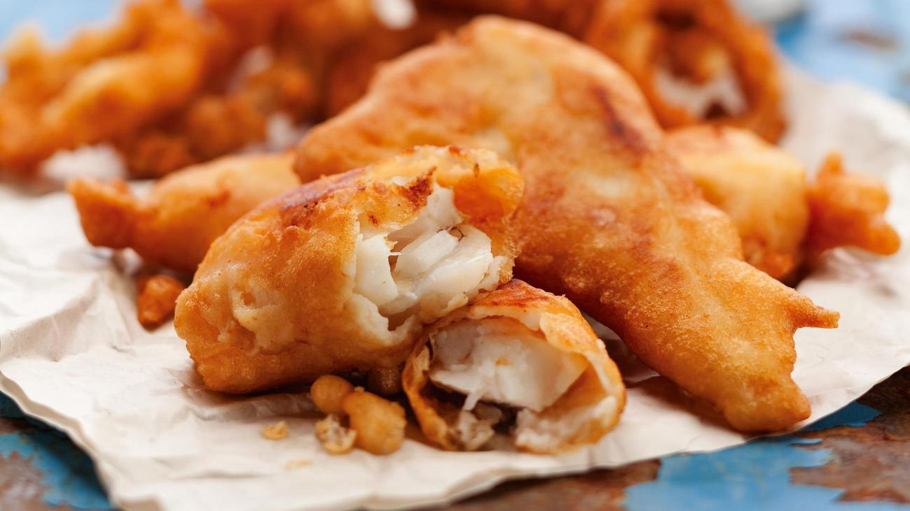

Walleye is already the best eating fish you can pull out of a Quebec lake. Sweet, firm, clean. Most people bread it with Ziploc-bag breadcrumbs and call it a day, which works, but beer batter is a different category entirely. The carbonation keeps it airy. The batter puffs and crisps around the fish instead of sitting on it like a crust. Done right, you get that glass-shard crunch when you bite through, then white fish that's barely been touched by the heat.
The beer matters more than people admit. A light lager gives you something neutral and crisp, but a Quebec craft pale ale — something like Boréale Blonde or Dunham Pale Ale — adds a faint bitterness that balances the fat from the fry. Don't use a stout or anything too heavy. The batter will taste like bread.
The One Rule That Matters
Cold beer, cold batter, hot oil. That's the whole trick. Warm batter goes slack and doesn't grip the fish. Mix your batter and stick the bowl in a cooler while your oil heats up. Everything else in this recipe is technique, but this is physics. Don't skip it.

Prepping the Fish
Pat your fillets completely dry with paper towel. This is non-negotiable. Wet fish makes batter slide off. Cut larger fillets in half on the bias so you get roughly equal-sized pieces that'll cook evenly. Dust each piece in plain flour and shake off the excess. The dry flour gives the wet batter something to hold onto — without it, the batter beads up and falls off in the oil.
Making the Batter
Whisk together ¾ cup of flour with the baking powder, salt, garlic powder, paprika, and cayenne. Pour in the cold beer and whisk until just combined. A few small lumps are fine — overmixing develops gluten and makes the batter dense. Put the bowl straight into your cooler. The contrast between cold batter and hot oil is what creates that crackling, airy crust.
Frying
Heat your oil to 180°C (355°F). If you don't have a thermometer, drop a small bit of batter in: if it rises immediately and sizzles steadily, you're there. Don't crowd the pan — two or three pieces at a time. Crowding drops the oil temperature and the batter absorbs oil instead of crisping.
Pull the batter from the cooler, dip each floured piece, let the excess drip for a second, and lower it into the oil away from you. Cook 3 to 4 minutes, turning once, until deep golden. Drain on a rack or paper towel — never a flat plate, where the bottom goes soft. Hit with flaky salt immediately while it's still crackling.
"Fish and chips wait for no one. Get the coleslaw and fries on the plate first, fish on top last. Eat it while the batter's still crackling."

The Full Recipe
Ingredients — The Fish
- 4 walleye fillets (about 170g / 6 oz each), skin off, pin bones out
- 1 cup (130g) all-purpose flour, divided (¾ cup for batter, ¼ cup for dusting)
- 1 tsp baking powder
- 1 tsp fine salt
- ½ tsp garlic powder
- ½ tsp smoked paprika
- Pinch of cayenne
- 1 cup (240ml) cold Quebec craft pale ale or blonde (Boréale, Dunham, or similar)
- Neutral oil for frying (canola or peanut), about 2L
- Flaky sea salt for finishing
Ingredients — Campfire Fries
- 4 medium russet potatoes, scrubbed
- 3 tbsp neutral oil
- 1 tsp coarse salt
- ½ tsp black pepper
- ½ tsp smoked paprika
Ingredients — Coleslaw
- 3 cups (270g) green cabbage, shredded fine
- 1 medium carrot, grated
- 3 tbsp mayonnaise
- 1 tbsp apple cider vinegar
- 1 tsp sugar
- Salt and pepper to taste
To Serve
- Malt vinegar
- Lemon wedges
- Flaky sea salt
Method
- Slaw first. Combine cabbage and carrot. Whisk mayo, vinegar, and sugar. Toss, season, and refrigerate. It improves as it sits — make it before anything else.
- Fries. Cut potatoes into wedges about 2cm thick. Toss with oil, salt, pepper, and paprika. Over a campfire, wrap in foil and cook over medium-high coals 25–30 minutes, turning halfway. On a camp stove, par-boil wedges 8 minutes, then fry in a few centimetres of hot oil until golden, about 6–8 minutes.
- Batter. Whisk together ¾ cup of the flour, baking powder, salt, garlic powder, paprika, and cayenne. Pour in the cold beer and whisk until just combined — a few small lumps are fine. Put the bowl in your cooler.
- Fish prep. Pat fillets completely dry with paper towel. Cut larger fillets in half on the bias for even-sized pieces. Dust each piece in the reserved ¼ cup of plain flour and shake off the excess.
- Fry. Heat oil to 180°C (355°F). Drop a bit of batter in — if it rises and sizzles immediately, you're ready. Working in batches of 2–3 pieces, pull the batter from the cooler, dip each floured piece, let excess drip, then lower into the oil away from you. Cook 3–4 minutes, turning once, until deep golden. Drain on a rack or paper towel and hit with flaky salt immediately.
- Serve fast. Get the coleslaw and fries on the plate, fish on top, malt vinegar and lemon on the side. Eat it while the batter's still crackling.
A Few Notes
On the beer. Use whatever pale ale or blonde you'd actually drink. Boréale Blonde and Dunham Pale Ale both work well — they add a faint bitterness that balances the richness without overpowering the walleye. Avoid dark ales and stouts; the batter will taste like bread.
On temperature. The cold batter / hot oil contrast is everything. If your batter warms up while you're frying the first batch, put it back in the cooler between rounds. A thermometer makes the oil temp foolproof, but the batter-drop test works fine in the field.
On camp cooking. This works just as well over a camp stove on a dock as it does in a kitchen. The beer doubles as something to drink while you cook. That part isn't optional.

20+ years fishing Quebec's freshwater systems. Kayak angler, catch-and-release advocate, and founder of Sub Urban Anglers.
Read More About Me